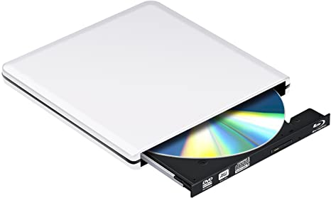

DVD

Il lettore DVD è un dispositivo per riprodurre DVD Video. La maggior parte dei lettori DVD deve essere connessa ad un televisore; ci sono anche dei piccoli dispositivi portatili che hanno uno schermo a cristalli liquidi (LCD). Un lettore DVD deve eseguire i seguenti compiti: 1) leggere un disco DVD in formato UDF versione 2 2) opzionalmente decriptare i dati protetti con i sistemi CSS e/o Macrovision 3) decodificare il flusso video MPEG-2 che raggiunge il massimo di 10 Mbit/s (picco) o 8 Mbit/s (medio) 4) inviare in uscita il segnale video, o in forma analogica (in formato PAL, SÉCAM o NTSC) o in forma digitale sul connettore DVI 5) decodificare il suono dei formati MP2, PCM o Dolby Digital opzionalmente con sottocampionamento da AC-3 a stereo 6) inviare in uscita il suono ai connettori stereo analogici o al connettore digitale elettrico o ottico La maggior parte dei lettori DVD permette anche di riprodurre CD audio (CDDA, MP3, ecc.) e CD video (VCD) ed include un decodificatore Home Theater (es: Dolby Digital, Digital Theater System (DTS)). Alcuni dispositivi riproducono anche video nel formato compresso DivX, molto popolare in internet. Nel 2005, i prezzi al dettaglio per tale dispositivo, in funzione delle sue caratteristiche opzionali (come il suono digitale o le uscite video), variano da 30 a 80 dollari/euro. I lettori DVD software sono programmi che permettono di vedere i DVD video su un computer con un DVD-ROM. Alcuni esempi sono VLC media player e MPlayer (entrambi software libero), come anche WinDVD, PowerDVD e DVD Player